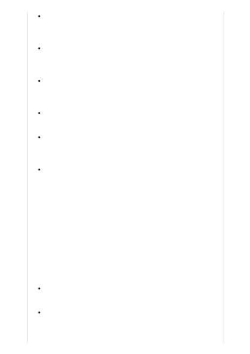

Journalistic content : For use to create new journalistic content or to rewrite
journalistic content submitted by the user as a writing aid for predefined
topics. Users cannot use the application as a general content creation tool for
all topics. May not be used to generate content for political campaigns.
Question-answering : Users can ask questions and receive answers from
trusted source documents such as internal company documentation. The
application does not generate answers ungrounded in trusted source
documentation.
Reason over structured and unstructured data : Users can analyze inputs
using classification, sentiment analysis of text, or entity extraction. Examples
include analyzing product feedback sentiment, analyzing support calls and
transcripts, and refining text-based search with embeddings.
Search : Users can search trusted source documents such as internal company
documentation. The application does not generate results ungrounded in
trusted source documentation.
Summarization : Users can submit content to be summarized for predefined
topics built into the application and cannot use the application as an open-
ended summarizer. Examples include summarization of internal company
documentation, call center transcripts, technical reports, and product reviews.
Writing assistance on specific topics : Users can create new content or rewrite
content submitted by the user as a writing aid for business content or pre-
defined topics. Users can only rewrite or create content for specific business
purposes or predefined topics and cannot use the application as a general
content creation tool for all topics. Examples of business content include
proposals and reports. For journalistic use, see above Journalistic content use
case.
We encourage customers to use the Azure OpenAI GPT-4, GPT-3, and Codex
models in their innovative solutions or applications as approved in their Limited
Access registration form. However, here are some considerations when choosing a
use case:
Not suitable for open-ended, unconstrained content generation. Scenarios
where users can generate content on any topic are more likely to produce
offensive or harmful text. The same is true of longer generations.
Not suitable for scenarios where up-to-date, factually accurate information
is crucial unless you have human reviewers or are using the models to search
your own documents and have verified suitability for your scenario. The
service does not have information about events that occur after its training
Considerations when choosing a use case